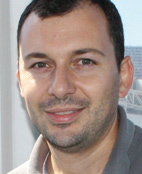
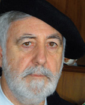
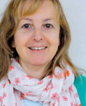
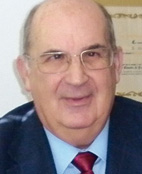
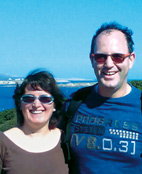
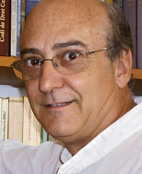
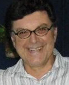
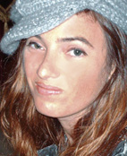

Collaboratori
Llorenç Allès Camps. Nato a Ferreries nell’anno 1979. Residente in Ciutadella dal 2007. Giornalista con esperienza in giornali, radio e televisione. Attualmente é redattore del Diario di Menorca.
Cristòfol Barber Villalonga. É uno storico e lavora negli archivi e nelle biblioteche. Ha pubblicato diverse opere di tematiche locali, ed é coautore di “Històries des Mercadal, 101 testimonis en primera persona”.
 Pedro J. Bosch. Medico oftalmologo, giornalista e scrittore. É stato Primario di oftalmología dell’ospedale Monte Toro e Presidente dell’Ateneo di Maó. Ha pubblicato 5 novelle e 4 libri di articoli e ricerca. Collabora con il diario di Menorca e El País.
Pedro J. Bosch. Medico oftalmologo, giornalista e scrittore. É stato Primario di oftalmología dell’ospedale Monte Toro e Presidente dell’Ateneo di Maó. Ha pubblicato 5 novelle e 4 libri di articoli e ricerca. Collabora con il diario di Menorca e El País.
Pau Faner. Scrittore, ha pubblicato piú di trenta libri e ha ottenuto i migliori premi di narrativa in catalano e castigliano, ed anche si dedica alla pittura.
Joana Gual. Laureata in storia alla UIB. Master in Gestione del Patrimonio Archeologico alla UOC. Tecnica del servicio del Patrimonio Storico del Consiglio Insulare di Menorca.
Juan Juanico Petrus. Tecnico di imprese e attivitá turistiche, Consulente Ambientale e MBA in Contabilitá Generale e Analisi Economiche-Finanziarie.
 Miquel Àngel Limón Pons. Nato in Alaior, é laureato in Giornalismo e membro numerario dell’IME (Institut Menorquí dEstudis).
Miquel Àngel Limón Pons. Nato in Alaior, é laureato in Giornalismo e membro numerario dell’IME (Institut Menorquí dEstudis).
Miquel Àngel Marquès. Laureato in Storia. Lavora in archivio, e nel suo tempo libero realizza lavori di ricerca sulla storia, la cultura e il patrimonio culturale di Menorca, con la idea di diffonderla.
Xavier Martin. Professore di Filosofia all’instituto Cap de Llevant di Mahón e membro dell’IME. Ha pubblicato differenti libri e articoli di tematica menorchina, specialmente sul teatro antico di Menorca.
Pere Riudavets i Fayas. Diplomato in Magistero e laureato in Filosofia. do en Magisterio y Licenciado en Filosofa. Maestro di Scuola nel CEIP Francesc d’Albranca di Es Migjorn Gran. Ama leggere, scrivere, insegnare, coversare e camminare.
Natàlia Sans Rosselló. Laureata in Geografia e Storia, Maestra di Educazione Musicale e studiosa della cultura tradizionale. Appasionata di storie di vita.
Adolf Sintes. Ricercatore dell’antropologia e etnie di Menorca. Scrittore, autore di vari libri, collaboratore abituale di vari media comunicativi. Membro dell’IME. MEMBRO DEL IME.